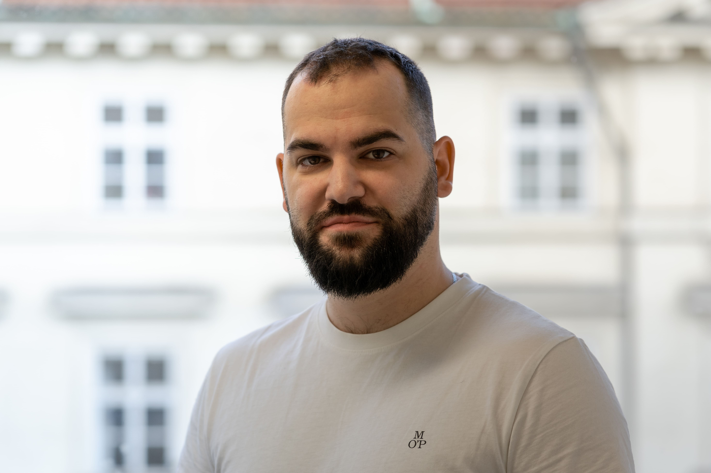

Strategický inženýring pro vaše klíčové stavby a investice. Řešíme náročné přeložky VN/NN u liniových staveb a zajišťujeme grid-connection velkokapacitních zdrojů — fotovoltaických elektráren i bateriových úložišť (BESS). Váš investiční záměr dovedeme až k pravomocnému povolení, bez zbytečných zdržení a pod razítkem autorizovaného inženýra.
Naše činnost nekončí u projektové dokumentace. Přebíráme jednání s distributorem, vlastníky pozemků i dotčenými orgány a vedeme je až k pravomocnému povolení.
Pro developery FVE a BESS
Připojení velkokapacitního zdroje nebo bateriového úložiště se u distributora zpravidla zdržuje. Provedeme vás celým procesem — od studie připojitelnosti přes nastavení komunikace RTU s dispečinkem až po pravomocné získání UPOS (umožnění provozu pro ověření souladu) a UTP (umožnění trvalého provozu) pro systémy nad 100 kW. Vše v součinnosti s ČEZ Distribuce, EG.D nebo PRE.
Pro liniové a dopravní stavby
Kolize trasy s distribuční sítí zastaví celý proces výstavby. Zajistíme projekt i povolení přeložky, vyřešíme majetkoprávní agendu, věcná břemena (SoBS VB) i dočasná dopravní opatření (DIO) a zastoupíme vás na kontrolních dnech — aby výstavba pokračovala podle harmonogramu a bez smluvních penále.
Pro komerční a průmyslové areály
Areál potřebuje vyšší příkon, který u distributora není volně k dispozici. Navrhneme řešení napájení včetně integrace baterií pro peak-shaving (vykrývání odběrových špiček) a chytrých trafostanic (smart grids), vyjednáme rezervovaný příkon a optimalizujeme vaše vícenáklady na připojení.
Ve velkých projekčních kancelářích zakázku často převezme méně zkušený projektant a projekt se stává jednou z mnoha položek ve frontě. U nás máte jistotu opaku — pracujeme cíleně a v omezeném počtu zakázek.
Jako dlouholetý smluvní partner ČEZ Distribuce známe schvalovací procesy zevnitř. Zatímco ostatní řeší dotazy přes infolinku, my víme, na koho se obrátit napřímo.
Rychle posoudíme zadání a identifikujeme kritické místo. Jasně sdělíme, co je řešitelné a jakou cestou.
Přebíráme kompletní agendu. Zajišťujeme jednání s úřady i distributorem, vy se soustředíte na realizaci.
Razítko, ÚTP, povolení přeložky, smlouva o připojení — kompletně zajištěno.

Zdržuje se připojení vašeho bateriového úložiště u distributora? Potřebujete navýšit kapacitu VN pro váš areál? Spojme se.
Napsat e-mail →